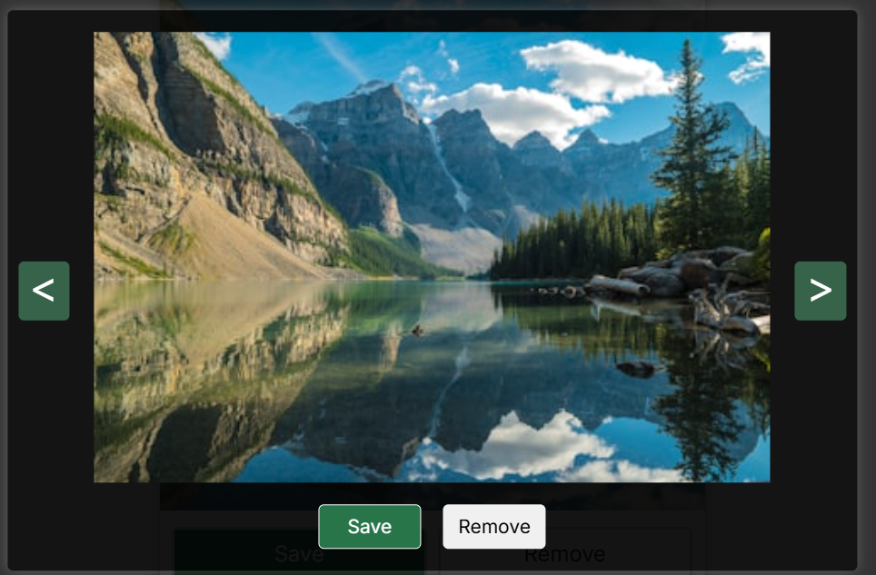
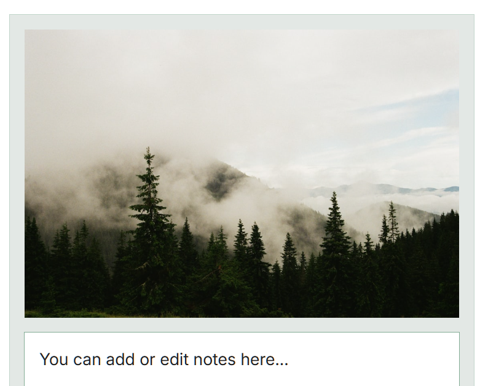
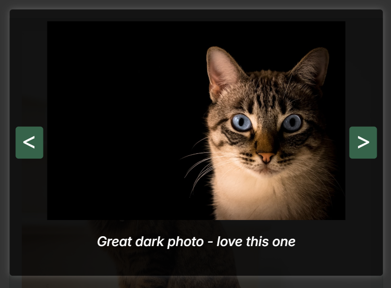
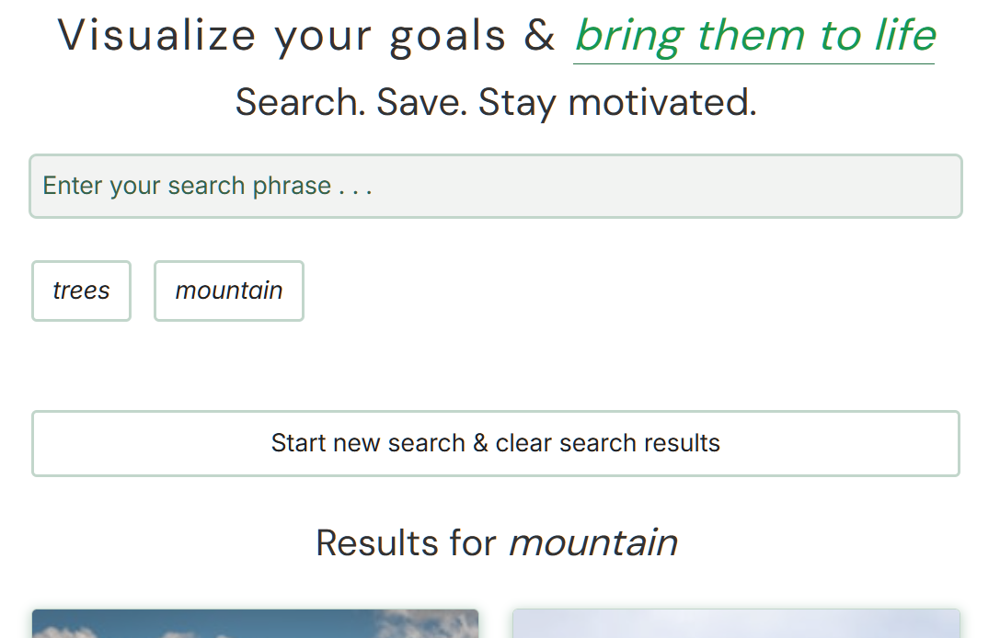
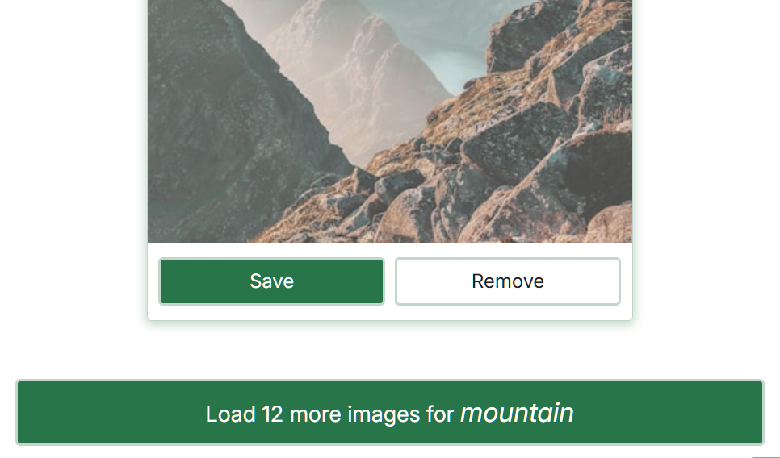
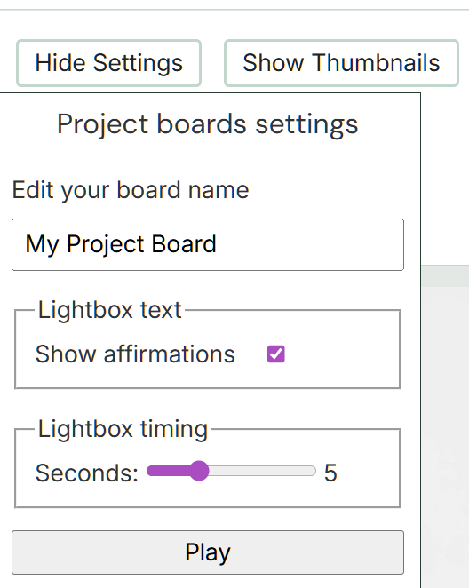
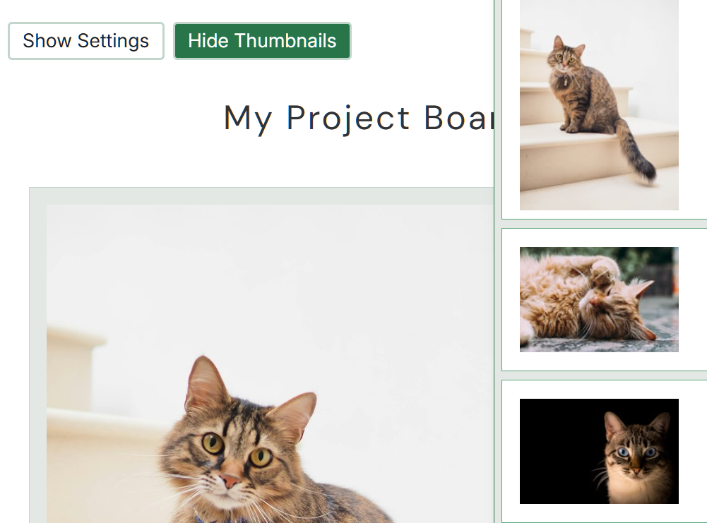

About Visual Grid
Introduction
VisualGrid is a responsive web app for visual project planning, goal-setting, and creative inspiration. You can search for images via the Unsplash API, save your favorites to a personalized board, and add notes, ideas, or goal statements to each image.
It's designed for anyone planning projects or tracking personal goals, making it easy to collect and annotate images in an organized space.
Features of VisualGrid
Powerful Search Options
- Each search phrase returns 12 images
- Click "Load more" for 12 more
- Revisit previous searches with one click
Search results
- See each images on a card with Save/Remove options
- Current search phrase added to results title and load more button
- See all past search phrases
Save Images to Your Board
- Click an image to view it in the modal at full size
- Save or Remove in modal view
- Saved images appear in your board panel
Add Meaningful Notes
- Add notes to any saved image
- Add goal statements to a photo in the modal view
- Edit or remove notes anytime
Thumbnail Controls
- Quickly jump to any saved image
- Reorder images up or down
- Delete unwanted images
Customize Your Vision Board
- Change the title for your board
- Adjust slideshow timing
- Show or hide affirmations
Home Page Modal

Navigate through the images
- Click on any image on the search page to view full image layout.
- Choose to Save or Remove image from this view.
- Navigate forward or backwards through all images.
- Click the close button ('x'), click outside inner modal, or hit Escape to exit the modal view.
Board Page View

View of photo and editable text field
- On your board page, see all saved images in a clean layout with an editable note area.
- Click any saved image to open it in a modal and add an affirmation or goal statement (115 characters max).
- Navigate between images in the modal to update multiple affirmations.
- Use the thumbnails view to delete saved images or move them up or down.
Lightbox Viewer

Editable affirmation on board modal
- Open the Settings menu to rename your board, start the image slider, & set the slider timing.
- Add a goal statement or affirmation for each image which is displayed during the slider.
- Use the full-screen slider to view saved images in sequence.
- Each slide shows the image's affirmation or goal statement.
Additional views
This section looks bad - edit or remove!
- Search input, past search terms buttons, clear all button on Home page
- Image card and Load More button on Home page
- Settings form on Board page
- Thumbnails view on right of page on Board page




Quick Start
- Search for images using keywords that match your project or inspiration.
- Save the images you like which will automatically appear on your board page.
- Add notes and/or affirmations to each saved image.
- Reorder, edit, or delete saved images as needed.
- Use the lightbox slider to review your board in full-screen mode.
Tips & Best Practices
- Use related search terms to build your themed board quickly.
- Add brief notes or affirmations to each image to capture ideas, goals, or steps to achieve your goal or project.
- Regularly organize and remove unused images to keep boards focused.
FAQ / Troubleshooting
-
Q: Why did my saved image disappear from the home page?
A: Saved images are removed from the home page and are added the the board page. -
Q: Can I recover a deleted image?
A: No - deleting an image from the board permanently removes it from your saved collection. -
Q: How do I adjust the slider speed?
A: Use the settings form on your board page to change the timing between slides.